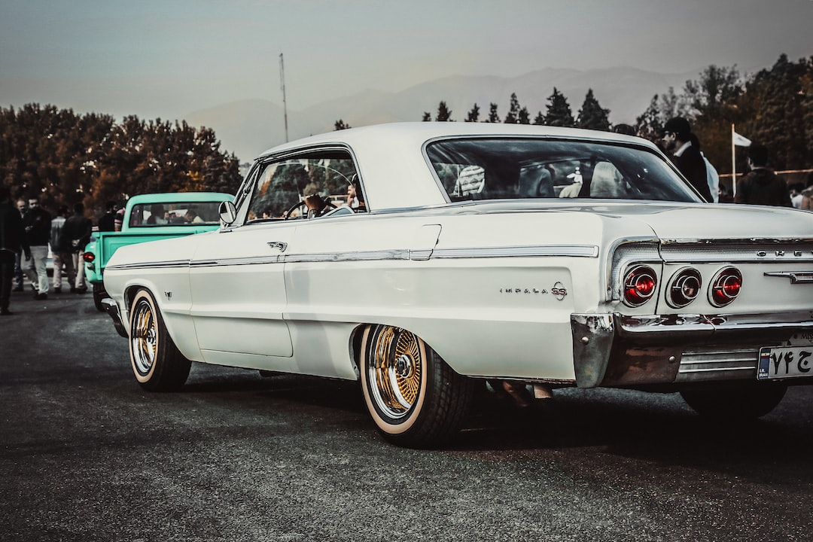
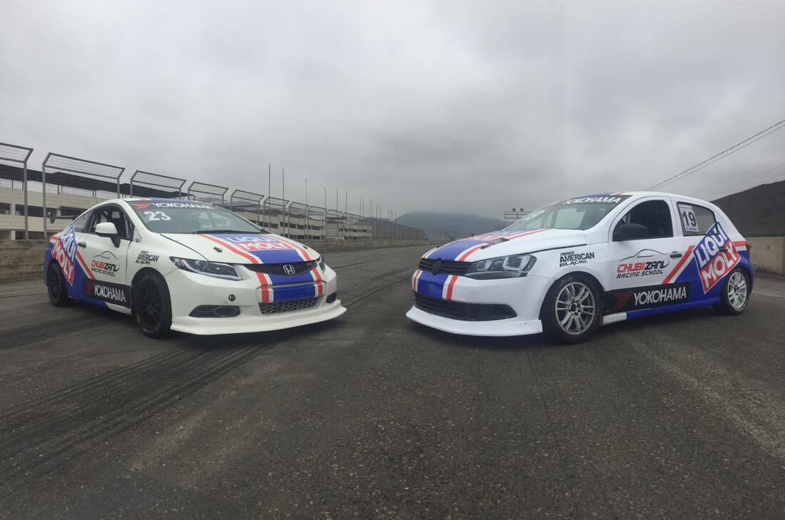

Genshin Impact Version 4.5 Preview
Mondstadt's alchemy industry is booming, driven by a soaring demand for all kinds of potions to overcome the trials and tribulations of daily life.
Read moreGrand Theft Auto (GTA) is a series of action-adventure games created by David Jones and Mike Dailly.[2] Later titles were developed under the oversight of brothers Dan and Sam Houser, Leslie Benzies and Aaron Garbut.
Almost all of the games in the NFS series employ the same fundamental rules and similar mechanics: the player controls a race car in a variety of races, the goal being to win the race. In the tournament/career mode, the player must win a series of races in order to unlock vehicles and tracks. Before each race, the player chooses a vehicle and has the option of selecting either an automatic or manual transmission.
